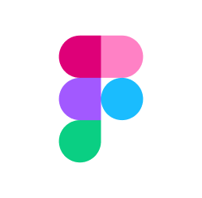
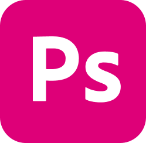

UX / UI Responsive Web Design
대구문화예술회관 반응형웹사이트 리디자인
PERSONAL PROJECT
UX / UI RENEWAL DESIGN
- Tool
-  
- Date
- 2025.08.11-21
- Designed by
- Song HyeLin

UX / UI Responsive Web Design
대구문화예술회관 반응형PERSONAL PROJECT
UX / UI RENEWAL DESIGN
기존 대구문화예술회관 웹사이트는 노후화가 진행된 상태입니다.
이로인해 보수 필요성을 확인할 수 있었습니다.
트렌디한 웹사이트와 양질의 콘텐츠 제공, 가독성 높은 레이아웃을
통해 사용자들의 접근성과 극장·전시관 이미지를 강화하고자 합니다.
01
방문자가 원하는 정보를 쉽고 충분하게 제공해야 한다.02
누구나 필요한 정보를 직관적으로 찾을 수 있어야 한다.03
모바일 환경에 최적화된 UI/UX를 구현해야 한다.04
공공성과 지역 문화적 정체성을 강화해야 한다.05
예약 및 예매 시스템은 단순하고 직관적이어야 한다.06
사용자 참여형 콘텐츠를 적극적으로 확대해야 한다.| Strength |
|
|
|
|---|---|---|---|
| Weakness |
|
|
|
| Benchmarking |
|
|
“때로는 화려하고, 정적인 예술의 양면성”
전체적으로 단조로워질 수 있는 정보 중심의 페이지 구성에 색상의 대비와 레이아웃의 여백을 활용하여
‘예술적이면서도 현대적인
미니멀리즘’을
표현하였습니다.
행사명과 일정을 직관적으로 전달하며,
시각적 임팩트를 통해 브랜드 아이덴티티와
몰입도를 높였습니다.
전화·온라인 예매와 대관 신청을 한눈에
확인할 수 있도록 직관적인
아이콘 메뉴로 구성했습니다.
공연·전시 포스터를 전면 배치하여
행사 성격을 강조하고,
사용자가 직관적으로 프로그램을 탐색할 수
있도록 구성했습니다.
달력형 일정과 공지 리스트를 분리 배치하여
사용자 접근성을 높이고,
정보를 한눈에 확인할 수 있도록 디자인했습니다.
행사 현장의 이미지를 활용해
축제와 공연의 생생한 분위기를 전달하며,
참여 욕구를 자극하는 비주얼 경험을 제공합니다.